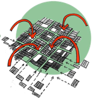
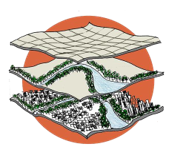

Prefeitura do Município de Porto Velho
Secretaria Municipal de Planejamento, Orçamento e Gestão - SEMPOG
O Plano Diretor Participativo do Município de Porto Velho, através da Lei complementar n°838/2021, dispõe que a sustentabilidade do Município, promovida pelas políticas públicas e pela atuação de todos os agentes que incidem na estruturação do território municipal e, em especial, nas áreas urbanas, será orientada pelas seguintes estratégias de longo prazo:
Cidade com a Floresta |
Controle da  |
Pertencimento |
Modernização da  |
Presença do Setor |
Define também que as políticas públicas municipais, bem como quaisquer ações implementadas por agentes públicos ou privados, que incidem direta ou indiretamente na estruturação do território municipal e em especial das áreas urbanas, devem estar alinhadas com as diretrizes temáticas, organizadas nos seguintes temas:
Desenvolvimento |
Meio Ambiente |
Clima Urbano e |
Mobilidade e Acessibilidade |
Saneamento |
Habitação |
Patrimônio Histórico |
Para acessar cada uma das Estratégias e Temas, clique nos botões ao lado.